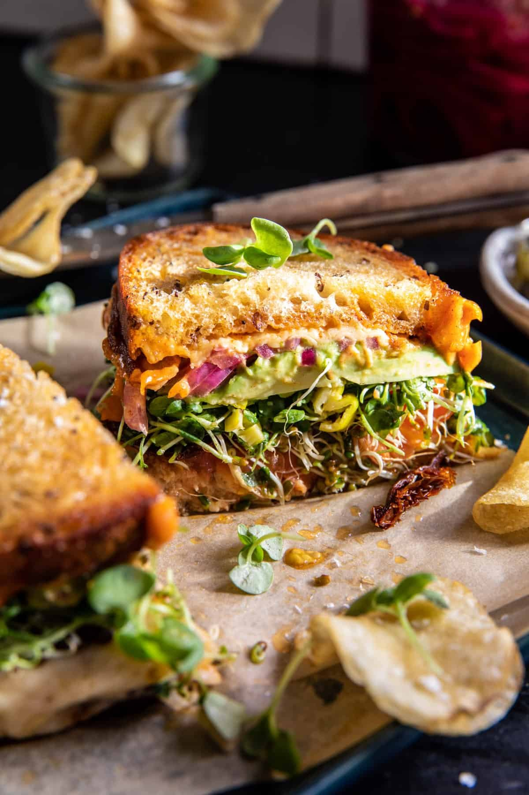

Bomb Sandwich

Melted Havarti Avocado Sandwich with Spicy Mayo
Ingredients
- Mayo
- Salt & Pepper
- Pepperoncini juice
- Hot Sauce
- Smoked Paprika
- Cayenne
- Sourdough bread
- Avocado
- Havarti cheese
Steps
- To make the mayo. Mix all ingredients in a bowl and season with salt.
- To make the sandwich, preheat the broiler to high.
- Working on a sheet pan, spread the outside of each piece of bread lightly with butter. Spread the inside with spicy mayo. Place the cheese slices over the mayo, then add the tomatoes cut side up. Broil 2-4 minutes, until the cheese is bubbling up and the tomatoes begin to char. Watch closely.
- Layer the sun-dried tomatoes, pickles, pepperoncini, sprouts, avocado, red onion, and jalapeños. Add the top piece of bread, cheese facing down. Slice and enjoy while warm with lots of extra mayo. YUMMMMMY.